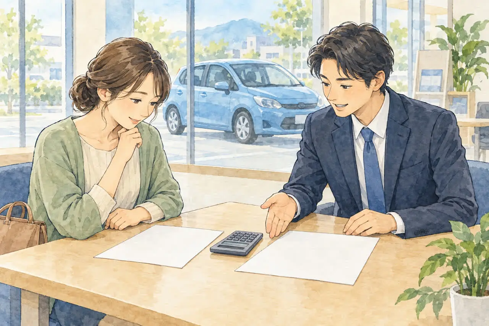
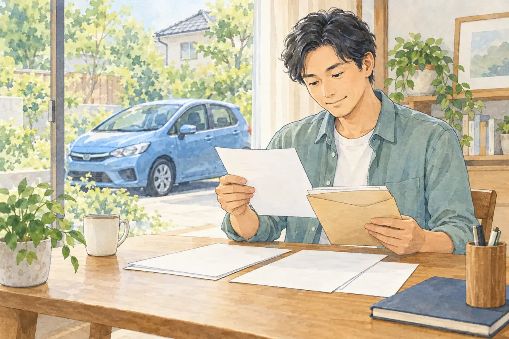

ローン中の車を手放したい方へ
ローンが残っている車は廃車できる？
所有者がローン会社のときの進め方
公開
こんにちは、東京都足立区江北で自動車解体・廃車買取をしている「大崎商店 環七店」です。
「ローンがまだ残っているけれど、事故で乗れなくなってしまった」
「車検証を見たら、所有者がローン会社になっている。このまま廃車にできる？」
ローンの途中で車を手放したいとき、こんなご心配を伺うことがあります。
結論からお伝えすると、ローンが残っていても、廃車にできる場合があります。 ただし、車検証の「所有者」がローン会社などになっているときは、そのままではご自身だけで廃車にできません。 先に車検証上の所有者とローン会社へ確認し、所有権解除や廃車への承諾など、指定された手続きを進める必要があります。
この記事では、ローン中の車を廃車にするときの流れを、やさしくご紹介します。
※ローンの契約内容は、会社ごとに違います。この記事は一般的な説明です。くわしくは、ご契約のローン会社・販売店にご確認ください。
① まず車検証の「所有者」を確認しましょう

車検証の「所有者」の欄に誰の名前があるかで、進め方が変わります。
| 所有者 | 状況 | 廃車の進め方 |
|---|---|---|
| ご自身 | ローンを組んでいても、名義はご自身 | ご自身の名義でも、処分前に契約条件を確認。担保や処分の制限がないか、貸主に相談します |
| ローン会社・ディーラー・販売店 | 所有権留保（ローンが終わるまで、貸主が所有者のままにしている状態） | 所有者の承諾と必要書類が必要。通常は完済後に所有権解除を進めます |
| リース会社 | リース契約 | リース会社への相談が先です（下記） |
ディーラーや中古車販売店でローンを組んだ場合は、完済するまで、所有者がローン会社や販売店になっているのが一般的です。ご自身は、車を使う「使用者」という立場です。
「電子車検証」は、所有者の情報が券面に書かれていません。「車検証閲覧アプリ」や、一緒に保管されている「自動車検査証記録事項」で確認してください。見つからない場合は、手続きを依頼する会社にご相談ください。
② 所有者がローン会社のとき、なぜそのままでは廃車にできないの？
売却や廃車は、所有者の意思に基づいて進める必要があります。所有者から委任を受けた人が手続きをする場合もあります。所有者がローン会社の場合、ご自身は「使っている人」なので、ローン会社の同意なしに、抹消登録や解体の手続きを進めることはできません。
そのため、ローン会社に連絡して、次のことを確認します。
- ローンの残高（あといくら残っているか）
- 車を廃車（解体）にしたいことの相談と、必要な手続き
- 所有権解除に必要な書類と、送付先、かかる日数
書類の発行や郵送にかかる日数は、会社や申請内容によって異なります。完済確認にも時間がかかる場合があるため、引き取り日を決める前に確認してください。早めに連絡しておくと安心です。
③ 残りのローンは、どうなる？

廃車にしても、ローンの支払いがなくなるわけではありません。 車がなくなっても、残りの返済義務は残ります。ただし、処分にあたって一括返済を求められる場合もあるため、これまでどおり分割払いを続けられるとは限りません。
車を手放す場合は、主に次の2つのパターンがあります。
買取価格がつく車の場合
ローン会社の条件と買取・支払いの段取りが合えば、買取代金を返済にあてる方法があります。以下は一般的な考え方です。早期完済に必要な金額は、明細の残高と異なる場合があるため、希望する返済日を伝えて確認してください。
- 買取額が、ローンの残高より多い：完済に必要な金額を返済にあて、差額が残る場合があります。入金や所有権解除の順序は事前に確認してください
- 買取額が、ローンの残高より少ない：足りない分（差額）を、現金などで用意して完済する必要があります。借り換えなどを検討する場合も、別途審査や契約が必要です。利用できるとは限らないため、貸主に相談してください
ローン会社から案内された完済額や所有権解除の条件を、買取を依頼する会社に伝えましょう。買取代金を返済に使う場合の支払い・引き取りの段取りは、事前に相談してください。
買取価格がつかない車の場合
買取代金を返済にあてられないため、必要な返済資金はご自身で準備することになります。所有権解除は、原則として完済後に進めます。 残債があるまま廃車への承諾を得られるか、分割返済を続けられるかは契約次第で、当然に認められるものではありません。ローン会社が所有権解除に応じる条件は、会社ごとに違うので、先にローン会社へご確認ください。
廃車手続きや解体の費用は、依頼先によって異なります。ローンの残りとは別にかかる場合があるため、依頼先に確認してください。
④ 所有権解除の流れ

一般的には、次のように進みます。書類や手続きの順序は、車の種類や登録状況、所有者の会社によって異なります。
- ローンを完済する（買取代金を使う場合は、段取りを事前に相談します）
- ローン会社が、所有権を手放す書類（普通車は、譲渡証明書・委任状・印鑑証明書など）を発行
- 書類を受け取る
- 所有者から指定された書類を確認し、必要な名義変更や廃車（抹消登録・解体届出）を進める。解体前に、所有者の承諾と必要な手続きを確認する
ご自身への名義変更が必ず先に必要とは限りません。 廃車への承諾・委任に基づく手続きなど、状況に応じて扱いが異なるため、所有者の会社と申請先の案内に従います。
基本となる準備物は、次のとおりです。
- 普通車：車検証の原本、前後のナンバープレート、所有者の会社が発行する譲渡証明書・委任状・印鑑証明書など。ご本人の印鑑登録証明書・実印が必要かは、進める手続きに応じてご案内します
- 軽自動車：車検証の原本、前後のナンバープレート、所有者の会社が指定する承諾・申請用書類など。通常の廃車と異なり、車検証とナンバープレートだけで済むとは限りません
必要書類がそろうまでの引き取りが可能かどうかも、依頼先へ事前に相談してください。ローン会社の承諾を得る前に解体を進めないことが大切です。
リース契約の車の場合
リース契約の車は、車の持ち主がリース会社です。ローンとは違い、契約期間の途中で返却や解約をすると、違約金（中途解約金）が必要になるのが一般的です。リース会社に、先に連絡してください。引き取りや買取を依頼する会社が対応できるかどうかも、リース会社の同意が前提になります。
よくある質問
Q. ローンが残っていても、廃車にできますか？
A. できる場合があります。所有者がローン会社の場合は、ローン会社の同意（所有権解除）が必要です。まず、ローン会社に連絡して条件を確認してください。
Q. 事故で廃車にしたら、ローンはなくなりますか？
A. なくなりません。車がなくなっても、返済は続きます。車両保険に入っている場合は、保険金がローンの返済にあてられることもありますが、契約内容によります。保険会社とローン会社の両方に確認してください。
Q. 車検証の所有者が、ディーラーのままでした。
A. ローンを完済している場合は、所有権解除の手続きをすれば、ご自身の名義に変えられます。ディーラーや販売店に連絡して、必要な書類を確認してください。
Q. ローンが残っていると、買取してもらえませんか？
A. 買取価格がつく車であれば、買取代金を返済にあてられる場合があります。実際に進められるかは、所有者の承諾や返済・所有権解除の条件によります。ローン会社の案内内容と車の状態を、依頼先に伝えて相談してください。
大崎商店の場合：ご相談のタイミング
ここからは、足立区の大崎商店の場合をご紹介します。
ローン中の車の廃車で、いちばん多いご心配は、「ローンがあるのに、手放せるのか」です。おすすめの流れは次のとおりです。
- 車検証（または記録事項）で、所有者を確認する
- ローン会社に、残高と完済・所有権解除や廃車承諾の条件を問い合わせる
- 大崎商店に、車種・状態・置いてある場所を電話で伝え、買取額と引き取り方法のご案内を受ける
- 買取額とローン残高を見比べて、進め方を決める
ご相談時には、ローン会社から案内された完済額や所有権解除の条件をお知らせください。買取代金を返済に使う場合の支払い・引き取りの段取りは、事前にご相談ください。リース契約の車は、リース会社の同意があるかどうかを先に確認したうえで、お電話ください。
「ローン会社に連絡する前の段階」でも、お電話でご相談いただけます。事故で動かない車でも、ふだんから現地まで引き取りに伺っています。事故車の場合は、「足立区で事故車を買い取ってもらうには？動かない車でも大丈夫」の記事もご覧ください。
大崎商店では、
- 廃車手続きの代行・解体の費用は無料
- 買取価格がつかない車も、環七店から片道約30分圏内は引き取り無料
- 買取価格がつく車は、圏外でも、所在地と車の状態によっては無料で引き取り（事前にご案内します）
- 車のお持ち込みは、どこからでも歓迎（基本は環七店。日時は、事前にお電話でご相談ください）
ローンが残っている車のことも、大崎商店にご相談ください
電話で相談する 03-3854-4141ご来店の前に、お電話ください。引き取りなどで外出していることもあり、お電話いただければ、即日対応できるかをご案内できます。
大崎商店 環七店
電話：03-3854-4141
〒123-0872
東京都足立区江北7丁目1−3
営業時間：月〜土 10:30〜18:00
休業日：日曜・祝日
環七沿い／舎人ライナー
西新井大師西駅
大崎商店 入谷店
電話：03-3899-2837
〒121-0836
東京都足立区入谷7丁目5−11
営業時間：月〜土 9:30〜17:30
休業日：日曜・祝日・第2土曜
引き取りやご相談のお電話は、環七店がスムーズです。お電話の際は、「ローンが残っている車の処分について」とお伝えください。車検証（または自動車検査証記録事項）をお手元にご用意いただくと、ご案内がスムーズです。
※掲載のイラストはAIで作成したイメージです。実際の店舗・ローン会社の相談風景を撮影したものではありません。
参考：ジャックス・オートローン完済時の所有権解除／トヨタファイナンス・早期完済と所有権解除／軽自動車検査協会・解体返納